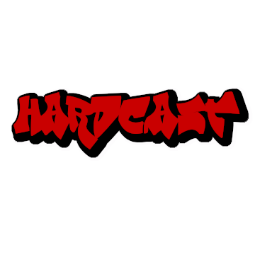

Latest Projects
Latest Blog
Title: A Different Kind of Beginning
Date: 3/30/20
Today, I've started building my portfolio from scratch. I've made several websites, but normally I'm following a guide or online lecture. This time, we're jumping in without floaties; no more training wheels; give me toilet paper and close the door, because today, I'm wiping my own ass.
Covid-19 has shaken the entire globe. It's made me reevaluate my career and environment. So here I am, chasing all the projects my heart wants to complete - Music, Games, Websites, Voices, Videos, Memories.
Onward, to building a better future. Most new beginnings come with uncertainty. But not this... This is a different kind of beginning.
More posts...